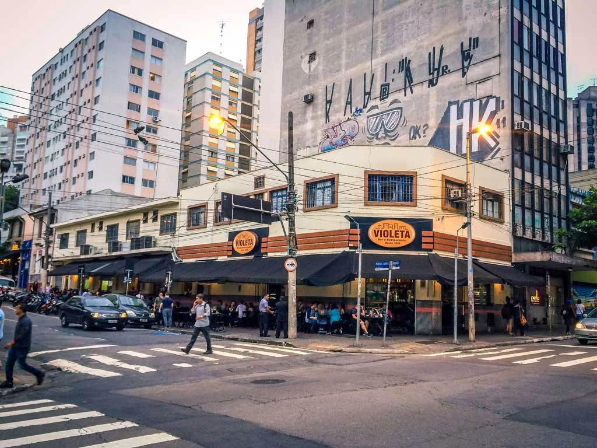

Paulista

Um dos principais centros financeiros da cidade, a avenida Paulista também possui diversas opções de entretenimento. Endereço do Museu de Arte de São Paulo, MASP, do Teatro Gazeta e muitos outros, a região é de fácil acesso graças às diversas linhas de ônibus que cruzam a avenida e à linha de metrô que passa por baixo dela. Saiba mais...
A Avenida Paulista sempre é assunto. O que será que estão falando a respeito no Instagram?
O Parque do Ibirapuera

Um dos cartões postais da cidade, o parque dispõe de mais de 1,5 km² de área verde, lagos artificiais e pistas de cooper e ciclismo. E se isso não fosse o suficiente, o parque costuma ser palco de diversos eventos culturais ao longo do ano.
Veja no mapa como chegar ao parque.
Museu do Futebol

Localizado no Estádio do Pacaembu, o Museu do Futebol é uma experiência interativa que celebra a paixão nacional. Ideal para todas as idades, o museu combina história, cultura e tecnologia para mostrar a importância do futebol na identidade brasileira.
Confira mais informações no site oficial.
Liberdade

Bairro tradicional da comunidade japonesa, a Liberdade é um verdadeiro pedaço do Japão em São Paulo. Com lojas típicas, feiras aos finais de semana e decoração temática, é o lugar ideal para quem busca cultura oriental e gastronomia asiática.
Descubra tudo que o bairro oferece no guia da Visite São Paulo.
Catedral da Sé

Situada na Praça da Sé, coração do centro histórico de São Paulo, a catedral é uma das maiores igrejas neogóticas do mundo. É possível visitar o interior e até conhecer a cripta onde estão sepultados bispos e figuras históricas.
Veja no Google Maps como chegar.
Beco do Batman

Um dos lugares mais instagramáveis de São Paulo, o Beco do Batman é um corredor artístico repleto de grafites coloridos. Localizado na Vila Madalena, o espaço é renovado constantemente por artistas urbanos.
Veja fotos e dicas de visita no Instagram oficial.
Jardim Botânico

Com trilhas, estufas de plantas nativas e lagos com vitórias-régias, o Jardim Botânico é ideal para quem busca tranquilidade e contato com a natureza. O espaço também abriga o Instituto de Botânica.
Informações sobre horários e ingressos estão no site oficial.
Farol Santander

Instalado no antigo prédio do Banespa, o Farol Santander une arte, história, tecnologia e gastronomia em um dos edifícios mais icônicos da cidade. Do alto, a vista panorâmica do centro de São Paulo é imperdível.
Conheça as atrações no site oficial.
Faria Lima

A Avenida Faria Lima é conhecida por sua diversidade gastronômica. Desde cafés sofisticados até restaurantes estrelados, a região oferece uma variedade que agrada todos os gostos. Perfeita para quem quer explorar diferentes sabores e ambientes.
Confira os melhores lugares da Faria Lima no Guia da Semana.
Rua Augusta
A Rua Augusta é um dos pontos mais boêmios da cidade. Ao longo da rua, você encontra diversos bares e restaurantes com estilos e cardápios variados. É o lugar ideal para quem busca um ambiente descontraído e opções de comida para todos os gostos.
Explore mais opções gastronômicas da Rua Augusta no Guia da Semana.
Vila Progredior

Se você procura um lugar com uma culinária criativa e ao mesmo tempo descontraída, a Vila Progredior é o lugar. Um bairro cheio de restaurantes alternativos e pequenos cafés que misturam arte, cultura e gastronomia de forma única.
Descubra mais sobre a Vila Progredior no site oficial.
Nenhum resultado encontrado